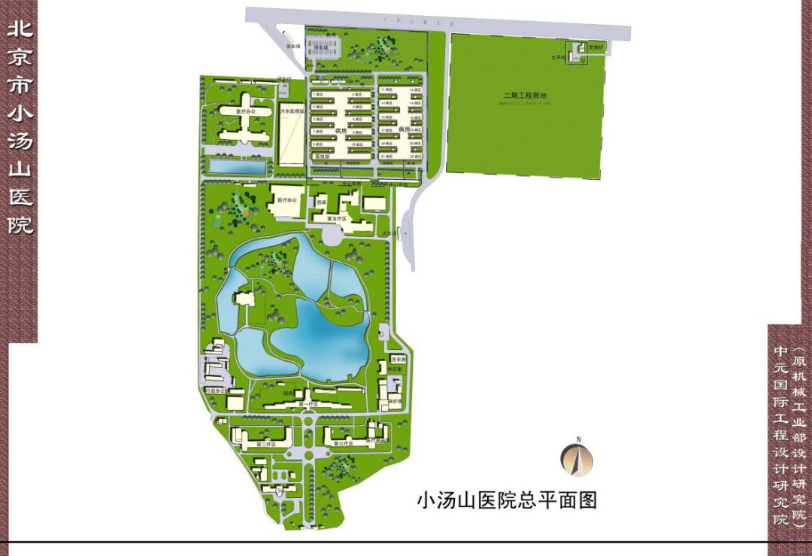
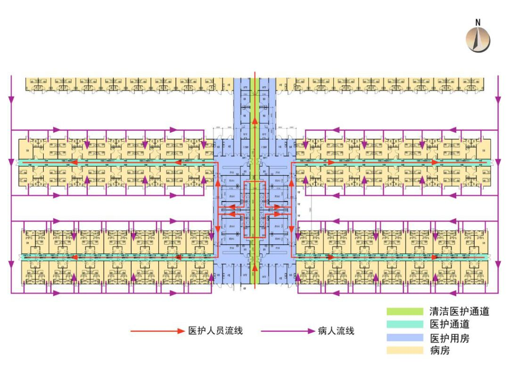

小汤山医院设计师：没想到图纸再用，希望武汉新医院效果更好
原文链接 备份链接 ********** *****黄锡璆表示，现在的技术条件比建设小汤山医院时好多了，他希望火神山医院的建设能够实现更好的使用效果。***** 火神山医院施工现场。受访者供图 文 | 新京报记者 韩沁珂 编辑｜王婧祎 校 …
*************▲************* 黄锡璆。采访对象供图
全文共*3809*字，阅读大约需要8分钟。
北京干燥，武汉湿润，这是最大的不同。湿润的气候条件可能利于病毒的生存和传播，对医院的防水工作提出了更高的要求。
小汤山当时主要是用板材。武汉用现成的集装箱房是个很好的想法，速度会更快，而且尺寸统一。不过，要尽可能满足无障碍推行的使用需求。
我们建议武汉不要在医院现场焚烧。武汉有很多集中的医疗垃圾废弃物焚烧点，用专用车辆、专用容器送到外面去集中烧。
我还建议广泛使用IT技术。从院外转运病人时，首先要利用网络传输病人数据资料，纸质病历有可能传播病原。
本文首发于南方周末 未经授权 不得转载
文 | 南方周末记者 谭畅
南方周末实习生 李佩云
责任编辑 | 何海宁
“不计其数的施工队，有做管网的，有打混凝土的，有做路基的，有装集装箱房的……密密麻麻，到处都是车，到处都是人。”2020年1月27日，正月初三，刘伟（化名）在武汉火神山医院施工现场，注视着自己公司的集装箱式活动房（以下简称“集装箱房”）被工人改装成隔离病房。
脚下这片面积近百亩的土地位于武汉市蔡甸区，毗邻知音湖，原是武汉职工疗养院的后备用地。1月23日晚上七点，本已放假回家的疗养院酒店前台小谢接到回去上班的通知，“因为上面临时决定，要用7天时间在疗养院建一所新医院”。
张伟也是在23日接到应急医院承建单位中建三局的电话，紧急采购1.5万平米的活动房和200个集装箱房。“我们不是唯一的供货商，武汉好多同行都接到通知了。”张伟说，货是现成的，困难的是在过年时召集安装集装箱房的工人，“我们给工人一天1500元，比平时的三倍还多”。
这所被命名为“火神山”的医院可容纳813张床位，预计2月2日可整体移交军方管理，开始收治病人。1月27日，开工三日后，火神山医院已经建成第一栋楼，连通5G网络。
与此同时，二十多公里外的江夏区黄家湖边，武汉市第二所应急医院——雷神山医院也已开工。据媒体报道，雷神山医院床位将达1500张，在武汉支援应急医院建设的原小汤山医院副院长邓传福告诉媒体，建第二所医院“是一些领导考虑到现在的疫情，心里比较急，担心火神山一所医院床位不够”。
武汉在新型冠状病毒感染肺炎疫情下修建火神山、雷神山医院，无疑受到2003年抗击SARS时期北京建小汤山医院的启发。
小汤山医院仅用7天建成，从4月30日晚收治第一例SARS患者，到6月20日最后18例患者出院，它一共“服役”50天。在收治的680例患者中，只有8例死亡，治愈率接近99%。而全院1383名医务人员，无一人感染。
1月27日上午，南方周末记者电话采访了小汤山医院的设计者、中国机械工业集团有限公司中国中元国际工程有限公司（下称“中国中元”）医疗首席总建筑师黄锡璆。黄锡璆已年届八十，他从未想过，当年为小汤山医院赶制的设计图纸，17年后会再次派上用场。
1
南方周末：你是什么时候得知武汉要按照“小汤山模式”建应急医院的？
黄锡璆：1月23日中午，一封加急的求助函送到中国中元。函件是从武汉市城乡建设局发过来的，里面说了解到我们设计了小汤山医疗点，有丰富的传染病控制区设计经验，希望我们提供小汤山医疗点的全套图纸，帮助武汉以备急用。
我们公司立刻整理小汤山的图纸，下午两点多把修订完善的图纸送达对方。同时中国中元成立了技术支持专家组，为武汉市随时提供技术咨询和建议。

小汤山医院总平面图。采访对象供图
南方周末：小汤山医院用地原本是小汤山疗养院预留用地，这次武汉的火神山医院也是建在疗养院里。应急医院的选址有什么讲究？
黄锡璆：小汤山的医务人员工作强度和压力都很大，工作完了需要退到生活区休息，我们称作“安全区”。另外，他们工作一段时间后需要换防，换防后要在生活区观察两个礼拜才能回家。那么小汤山医院就是把原来的疗养院作为医务人员的生活区。
应急医院的建设工作很紧急，利用现成的成熟设施作生活区，就可以集中精力建设病区。
应急医院最好选择市政系统成熟、交通便利、周边人口稀少的地方，同时要综合考虑当地环境因素。武汉方面是在确定（火神山医院）选址以后给我们发函的，他们和当地环保部门应当协同评估过。
南方周末：考虑到北京和武汉环境因素的差异，武汉建造应急医院有哪些注意事项？
黄锡璆：北京干燥，武汉湿润，这是最大的不同。湿润的气候条件可能利于病毒的生存和传播，对医院的防水工作提出了更高的要求。病区地面要有高差，防止积水。患者通道也不能露天，最好能加个遮雨棚。要是用电空调采暖，室内温度升高可能会滋生细菌，还要增加通风量。这些我在给武汉方面的建议中都写到了。
南方周末：应急医院怎么设计能减少医务人员感染？
黄锡璆：有一个基本原则，叫“医患分区分流，洁污分区分流”。
小汤山医院病房功能组织图。采访对象供图
小汤山医院中间有一条中轴线通道是综合办公区，六排病房沿着中轴线对称分布。医务人员平常从生活区进入中轴线办公，当他们要进入病区时，沿医务人员专用通道走，先经过一个卫生通过室。他们在里面戴上口罩，穿上防护服，全副武装进入病区。接触完病人退出来时，他们再次经过卫生通过室，全身冲洗后换上干净衣服，回到生活区。
而病人进入病房是用病房外侧的通道，所以病人通道和医务人员通道是严格分开的，病人不会经过清洁区域。医务人员通过传递窗递送食品、药品，尽量只在必要时才进入病房，这样可以减少医务人员和病人的直接接触。
我们加了风扇控制气流组织，使空气从中间的干净区域向两边污染区域单向流动。当时还想加入更复杂的过滤系统，但是没有来得及。
南方周末：有武汉火神山医院的施工人员看过图纸，他们告诉我，火神山医院的布局也是中间有一根主轴，ICU病房、隔离病房、康复病房等沿中轴线分布。
黄锡璆：我们把图纸都提供过去了，武汉方面应当会采纳。洁污分区的设计理念不光对应急医院有用，SARS之后新建的一些传染病医院，像北京地坛医院、潮白河医院都做得比较严格。
小汤山医院的布局叫作中轴对称的鱼骨状布局，这种布局还有一个好处，有利于分头施工、赢得时间。因为小汤山的建设速度要求非常快，当时六排病房是六家不同的施工单位在做，他们采用不同的建筑材料，有的是混凝土，有的是不同规格的板材，所以每一排都不一样。中间一条通道把六排病房串起来，自然就形成这样的布局。
南方周末：武汉这次采购了大量集装箱房用作病房，基本是统一规格的。
黄锡璆：小汤山当时主要是用板材。武汉用现成的集装箱房是个很好的想法，速度会更快，而且尺寸统一。
不过，集装箱下部的钢框架有可能导致病房与外面走廊之间出现门槛。根据小汤山医院经验，虚弱病人轮椅推行、移动式检查设备推行几率较大，要尽可能满足无障碍推行的使用需求。
*************▲*************武汉雷神山医院建设现场，工人正在改装集装箱。采访对象提供
2
南方周末：前几日有公众担心，火神山医院会不会污染知音湖水体。现在雷神山医院也是临湖建造的。
黄锡璆：我们提醒了武汉，医院的污水处理是相当重要的。小汤山医院当时因为来不及，就利用疗养院原有的游泳池，改造后加上盖板，作为一个污水处理设施。前几天我们也讨论，因为建污水处理池一般要用现浇的钢筋混凝土，武汉方面可能来不及，所以建议他们用现成的大型水箱。后来听说他们有现成的污水处理装置，也是钢结构的，运到现场后可以快速安装。那就采用现成的产品，可以加快进度。
医院污水经过处理后达标了，一般还是排到市政管网，传染病医院也是这样操作的。
南方周末：小汤山医院是怎么处理医疗垃圾的？
黄锡璆：这个问题也很重要。传染病人接触的东西，回收时要特别注意。
我们在小汤山医院设置了一个焚烧炉，垃圾送到焚烧炉之前先要进行环氧乙烷灭菌。焚烧也不是一般的焚烧，烧出来是白灰。但是因为垃圾里面的有机物，烧起来有异味，像烧头发的味道一样，还是对周围环境有一些影响。
这次我们建议武汉不要在医院现场焚烧。武汉有很多集中的医疗垃圾废弃物焚烧点，用专用车辆、专用容器送到外面去集中烧，我们做了这个建议。
南方周末：设计小汤山医院时，你参考过哪些国际经验？
黄锡璆：国际上有地震的应急设施，一般采用充气结构、气囊结构，也有集装箱结构，或者列车结构，这些资料我也看过。但是在像SARS这样的疫情下建设大规模的应急医院，小汤山应该是首例。我们是按照当时的对传染病的理解设计小汤山的。
南方周末：小汤山医院的建设人员曾回忆，建设过程中设计方案不断更改。比如护士站原本没有要求装空调，后来发现医务人员穿着隔离服工作，非常热，中途又加装空调。
黄锡璆：应急设施不可能十全十美的。有一开始没想到的地方，也有想得很好但当地没有材料实施不了的。设计图纸只是一部分，一定要因地制宜。
比如小汤山医院的医疗影像设备装在了医院的角落里，本来按照诊断流程，放在进门的地方更合适，结果发现和那片区域原有配电箱位置冲突。那只能是放在不太好的位置，后来医院配置了电瓶车来运送病人。
还有小汤山因场地有限，每个护理单元之间的距离仅有12米。这次我们建议武汉把距离扩大到18米到20米，可以进一步降低感染风险。保证安全是首位的，好看和舒适度是次要的。
南方周末：你还向武汉方面提出了什么建议？
黄锡璆：我建议武汉在清洗救护车的地方建一个防止污水外溅的棚子，这也是为了减少感染风险。小汤山因为时间限制，没来得及建。
我还建议广泛使用IT技术。从院外转运病人时，首先要利用网络传输病人数据资料，纸质病历有可能传播病原。病人可能有多种并发症，可以和其他医院专家远程联网会诊，提高救治效果。取消院内探视，改用远程影像系统。这些在小汤山医院就已经部分采用了。

征集

《南方周末》现向所有身处新冠肺炎一线的读者公开征集新闻线索。我们欢迎武汉及周边城市医患联系记者，提供防疫前线的一手资讯，讲述您的新春疫情见闻。若您不在武汉，但您身处之所也有与疫情相关的重要新闻线索，亦欢迎您与我们分享。疫情仍在蔓延，南方周末将执笔记录每位国人在疫情面前的希望与困境，与广大读者共同面对疫情。祝愿所有读者朋友们，新春平安。线索可直接给本篇文章留言，格式为：【线索】+内容+您的电话（绝对会对您的个人信息保密）


文章已于修改
原文链接 备份链接 ********** *****黄锡璆表示，现在的技术条件比建设小汤山医院时好多了，他希望火神山医院的建设能够实现更好的使用效果。***** 火神山医院施工现场。受访者供图 文 | 新京报记者 韩沁珂 编辑｜王婧祎 校 …
原文链接 备份链接 腾讯新闻《潜望》作者 郭晓峰 新型肺炎疫情，牵动万众。日前，三大电信运营商启动了应急通信保障工作，全力保障通信畅通，保障重点区域、隔离医院等移动通信网络畅通。 与此同时，重灾区武汉，5G网络的建设与疫情争分夺秒。1 …
原文链接 备份链接 *************▲************* 大批量新国标标准的口罩正进入嘉兴“心脏仓” 。 （新华社/阿里巴巴供图/图） 全文共*4420*字，阅读大约需要*10*分钟。 “缺口以万为单位”，武汉市汉口医 …
原文链接 备份链接 编者按： 据央视新闻，武汉市政府将参照北京小汤山的模式建立急救医院，建筑面积达到2.5万平方米，可容纳1000张病床，医院将在6天内建成。 2003年，小汤山医疗点在对抗非典的战役中成效显著：一周建成，成为当时世界最大 …
原文链接 备份链接 他觉得自己像一个巨大的电插座，身上插满了孔，求助信息和资源提供信息被一起插到他身上，他再来牵线对接。 文 | 谢婵 李叙瑾 编辑 | 小豆 22岁的梅浩宇窝在出租屋里，吃光了13包泡面和3大袋零食，每天睁开眼睛，他就开 …